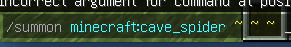
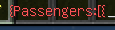
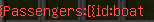

This Is How To Make A Entity Ride A Entity
1. click / on your keyboard. then type summon, you can replace cave spider to any entity you want.
Then type the ~ key 3 times with a space in between, you can do this by pressing shift and
pressing the key above the left tab key.

2. Make a space then type a curly bracket, do this by pressing shift adn pressing the key on the right of "P".
Then type "Passenger:" make sure you have a capital "P" Then type a bracket then a curly bracket

3. type "id:" make sure there are no capitals. you can replace boat with any thing, you may want to know what it is,
like some people might say "minecraftcow" you dont need the "minecraft" just remember something like "bee".

4. To finish of, you need to do a curly bracket then a bracket then a curly bracket again.
Then Your Done! You can make it different entitys to make cool things. It should all be green if it is correct.

you can tell me what you want to know how to do next
caiusblair@gmail.com